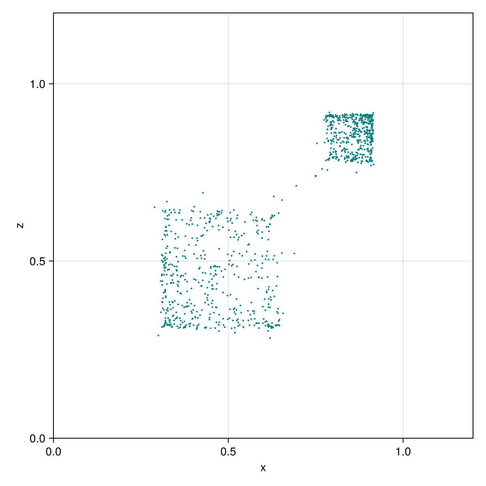
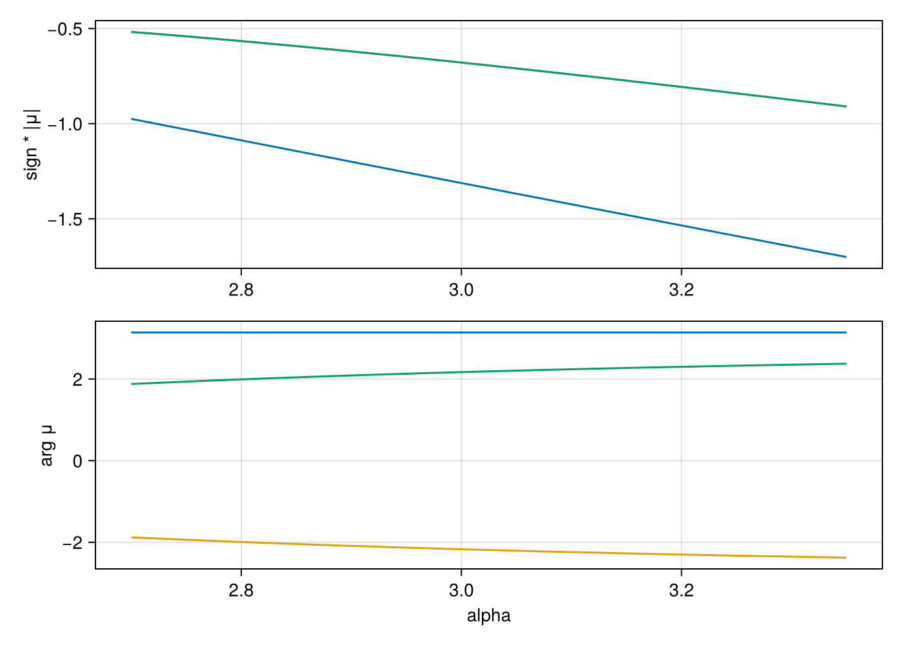
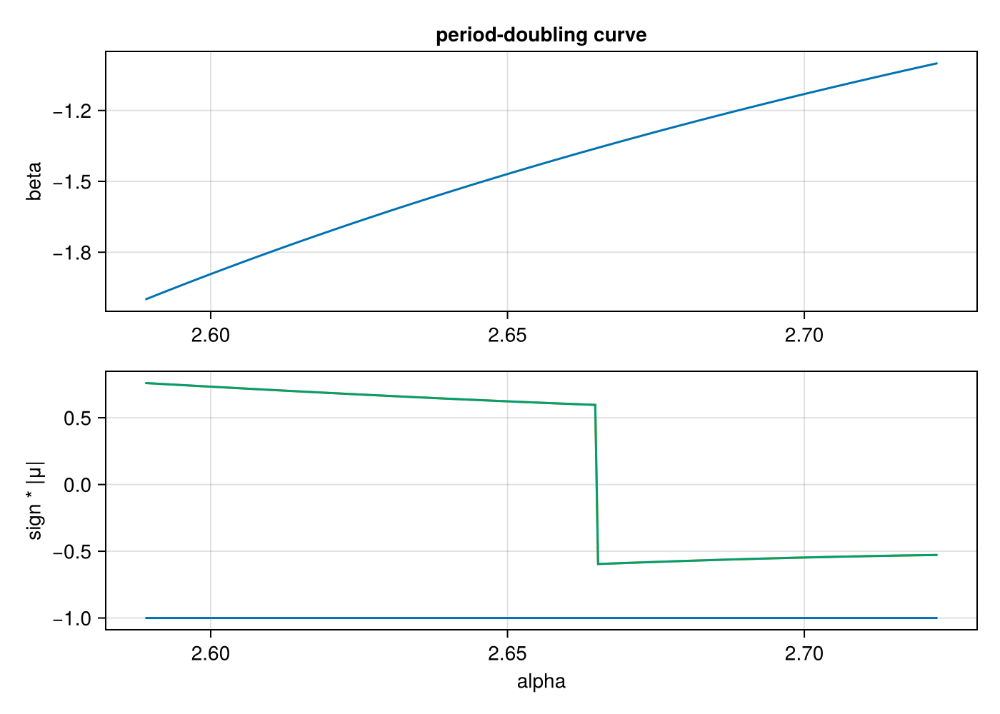

Three coupled logistic maps
A discrete map on $\mathbb{R}^3$,
\[x \to \alpha x (1 - x) + \beta y^2 x + \gamma z^3\]
and cyclically in $y$ and $z$, wrapped in a Diffeomorphism. The example follows a fixed point along $\alpha$, locates a period-doubling bifurcation and continues it in the $(\alpha, \beta)$ plane. Python counterpart: examples/logistic_3d.py of mappy-ds.
using MappyDS, CairoMakie, StaticArrays
logistic_3d = Mapping(3; name = :logistic_3d) do y, p
x, u, z = y
return SVector(
p.alpha * x * (1 - x) + p.beta * u^2 * x + p.gamma * z^3,
p.alpha * u * (1 - u) + p.beta * z^2 * u + p.gamma * x^3,
p.alpha * z * (1 - z) + p.beta * x^2 * z + p.gamma * u^3,
)
end
dmap = Diffeomorphism(logistic_3d)
params = (alpha = 2.7, beta = -1.0, gamma = 0.0146)
params_alt = (alpha = 3.6324, beta = 0.0193, gamma = 0.0146)
y0 = [0.75, 0.72, 0.74]3-element Vector{Float64}:
0.75
0.72
0.74Orbit
The orbit projected on the $(x, z)$ plane, for the second parameter set (chaotic). ykey = 3 selects $z$ for the vertical axis.
config = PlotConfig(;
xlim = (0.0, 1.2), ylim = (0.0, 1.2), xlabel = "x", ylabel = "z", ykey = 3,
only_map = true, point_style = LineStyle(; color = :teal, alpha = 1.0), markersize = 3.0,
param_keys = [:alpha, :beta, :gamma], param_step = 0.05,
)
plot2d(dmap, y0, params_alt, config; frames = 1000, show = false)
using GLMakie
plot2d(dmap, y0, params_alt, config) # interactive; p cycles through alpha, beta, gammaFixed point along $\alpha$
The fixed point found at $\alpha = 2.7$ is continued up to $\alpha = 3.35$. The signed moduli $\operatorname{sign}(\operatorname{Re} \mu) |\mu|$ and the arguments of its multipliers show one of them reaching $-1$.
cycle = find_cycle(dmap, y0, params)
println("fixed point at alpha = $(params.alpha): $(cycle.y)")
steps = trace_cycle(dmap, cycle.y, params, :alpha, 3.35)
last1 = steps[end]
println("traced $(length(steps)) steps to alpha = $(last1.params.alpha)")
println(" y = $(last1.y), multipliers $(last1.info[:eigvals])")
signed_moduli(eigs) = sign.(real.(eigs)) .* abs.(eigs)
alphas = [s.params.alpha for s in steps]
moduli = reduce(hcat, [signed_moduli(s.info[:eigvals]) for s in steps])
thetas = reduce(hcat, [angle.(s.info[:eigvals]) for s in steps])3×100 Matrix{Float64}:
3.14159 3.14159 3.14159 3.14159 … 3.14159 3.14159 3.14159
-1.87866 -1.88666 -1.89458 -1.90242 -2.37014 -2.37317 -2.37616
1.87866 1.88666 1.89458 1.90242 2.37014 2.37317 2.37616fig = Figure(; size = (700, 500))
ax1 = Axis(fig[1, 1]; ylabel = "sign * |μ|")
ax2 = Axis(fig[2, 1]; xlabel = "alpha", ylabel = "arg μ")
for i in 1:3
lines!(ax1, alphas, moduli[i, :])
lines!(ax2, alphas, thetas[i, :])
end
fig
Period-doubling curve
find_local_bf locates the period doubling in $\alpha$ and trace_local_bf follows it while $\beta$ decreases to $-2$:
bf = find_local_bf(dmap, last1.y, last1.params, :alpha, pi)
println("period doubling at alpha = $(bf.params.alpha), y = $(bf.y)")
curve = trace_local_bf(dmap, bf.y, bf.params, :alpha, bf.theta, :beta, -2.0; resolution = 300)
last2 = curve[end]
println("traced $(length(curve)) bifurcation points to beta = $(last2.params.beta), alpha = $(last2.params.alpha)")
alphas_bf = [s.params.alpha for s in curve]
betas_bf = [s.params.beta for s in curve]
moduli_bf = reduce(hcat, [signed_moduli(s.info[:eigvals]) for s in curve])3×300 Matrix{Float64}:
-1.0 -1.0 -1.0 … -1.0 -1.0 -1.0
-0.527879 -0.528251 -0.52863 0.758463 0.759305 0.760146
-0.527879 -0.528251 -0.52863 0.758463 0.759305 0.760146fig = Figure(; size = (700, 500))
ax1 = Axis(fig[1, 1]; ylabel = "beta", title = "period-doubling curve")
lines!(ax1, alphas_bf, betas_bf)
ax2 = Axis(fig[2, 1]; xlabel = "alpha", ylabel = "sign * |μ|")
for i in 1:3
lines!(ax2, alphas_bf, moduli_bf[i, :])
end
fig
This page was generated using Literate.jl.